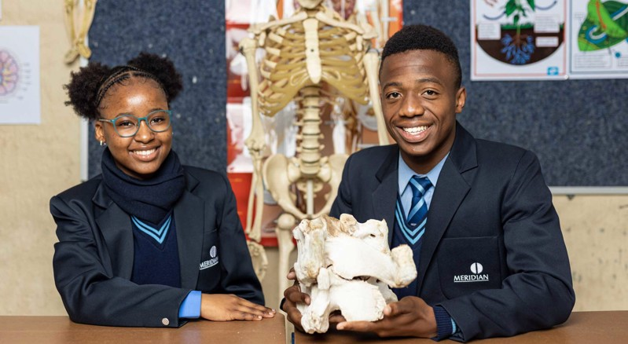
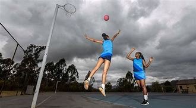
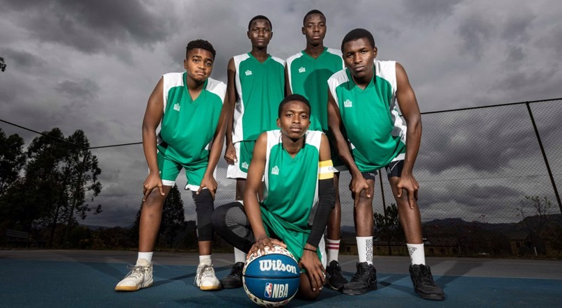
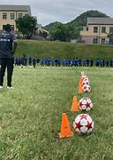

Meridain Karino has a high school that provides excellent education to learners from Grade 8 to Grade 12
The school's class sizes are limited to no more than 35 learners.
Current total number of learners enrolled: 617 learners

They offer a variety of intriguing sports such as netball, soccer, rugby, tennis, chess and basketball.



As well as cultural activities such as dance, choir, etc.
Learners have various subjects to choose from such as Robotics, Consumer Studies, Life Science, etc.
Meridain Karino transport and also has a hostel facility that makes our learners feel at home
National Senior Certificate (NSC) - CAPS Curriculum
Let's settle for average.Let's strive on excellence and shape the future